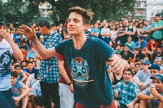
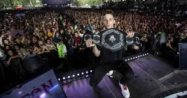
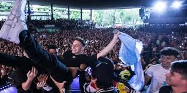
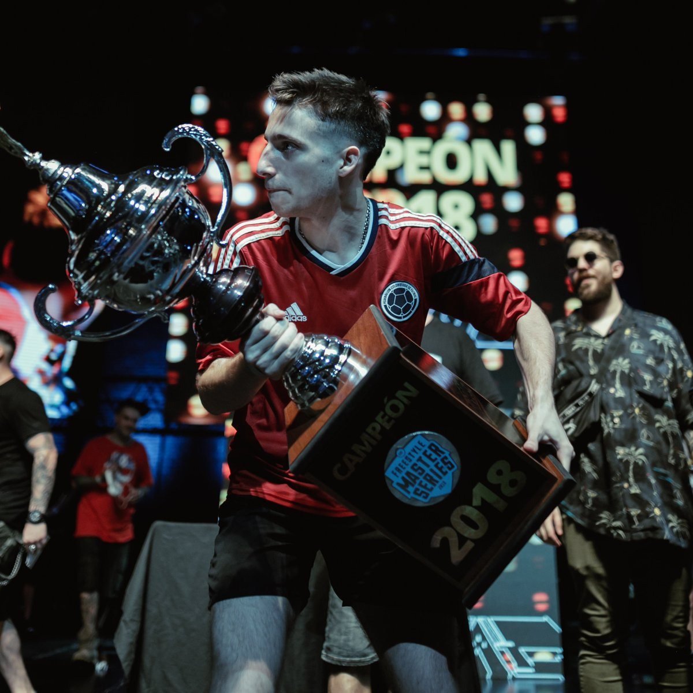
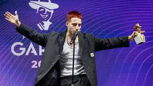
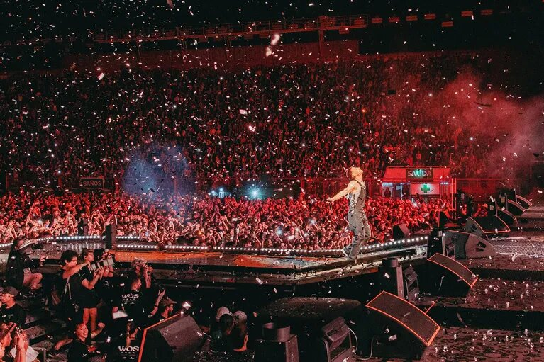
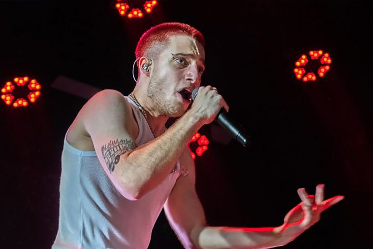

Inicios
Valentín Oliva nació el 22 de marzo de 1997 en Buenos Aires, Argentina. Desde
una edad temprana, mostró interés por la música y la poesía. Su pasión por el freestyle rap y la
improvisación lo llevó a participar en diversas competencias locales y nacionales, donde rápidamente
comenzó a ganar reconocimiento por su estilo único y sus habilidades líricas.
Batalla de los Gallos y Ascenso a la Fama:
Wos alcanzó la fama en la escena del freestyle rap argentino al ganar el campeonato nacional "Red
Bull Batalla de los Gallos" en 2017. Su estilo fresco, su capacidad para improvisar rimas ingeniosas
y su presencia escénica le valieron el título y lo catapultaron a la atención del público.

Llamada a la liga
Wos, cuyo nombre real es Valentín Oliva, fue invitado a participar en la
Freestyle Master Series (FMS) Argentina por los organizadores y promotores de la competición. En la
FMS, los participantes son seleccionados en función de su talento, reputación y habilidades en el
freestyle rap.
Wos ya era un rapero reconocido en la escena del freestyle antes de unirse a la FMS. Había
demostrado su habilidad en competencias locales y nacionales, y su estilo innovador lo había
convertido en un nombre destacado en el panorama del rap en Argentina.
Dada su influencia y su capacidad para cautivar a la audiencia con su enfoque artístico único, Wos
fue uno de los raperos elegidos para formar parte de la primera temporada de la FMS Argentina. Su
participación en la liga contribuyó en gran medida a la popularización y al éxito de la competición,
y su desempeño a lo largo de las temporadas posteriores lo convirtió en una figura influyente en la
cultura del freestyle y la música en Argentina.



Desarrollo en la liga
La tercera temporada de la FMS Argentina fue un momento importante para Wos. Durante esta temporada,
demostró una evolución impresionante en su estilo y enfoque hacia las batallas. Además de su
habilidad para improvisar rimas, comenzó a incorporar elementos más poéticos y líricos en sus
respuestas, lo que le dio un enfoque artístico distintivo.
A lo largo de la temporada, Wos protagonizó batallas memorables contra otros raperos talentosos de
la liga. Su creatividad, fluidez y capacidad para conectar con el público le valieron una serie de
victorias notables en diversas jornadas de la FMS.
Una de las características destacadas de la temporada fue su duelo con el rapero Trueno. Este
enfrentamiento en particular atrajo mucha atención debido a la rivalidad y al alto nivel de ambos
participantes. La batalla entre Wos y Trueno se considera una de las más icónicas en la historia de
la FMS Argentina y tuvo un impacto significativo en la popularidad de la liga.
El éxito constante de Wos a lo largo de la temporada lo llevó a asegurarse
el título de campeón de la FMS Argentina en esa primera temporada. Su habilidad para fusionar
técnicas de freestyle con elementos líricos y artísticos contribuyó a su victoria. Su enfoque
innovador en las batallas y su capacidad para evolucionar su estilo le permitieron ganarse el
reconocimiento no solo de sus compañeros competidores, sino también del público en general.

Actualidad
La participación y el éxito de Wos en la FMS Argentina contribuyeron
enormemente a la popularización y al reconocimiento del freestyle rap en la cultura argentina. Su
estilo innovador y su enfoque artístico influyeron en muchos otros raperos y llevaron la disciplina
a nuevos horizontes. Además, Wos no solo se destacó en las competencias de freestyle, sino que
también es un artista musical versátil que ha lanzado canciones exitosas.


